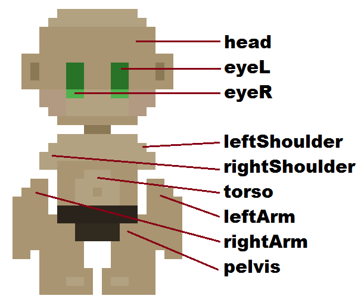
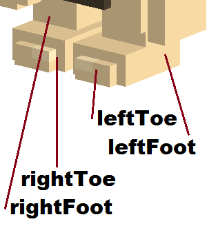
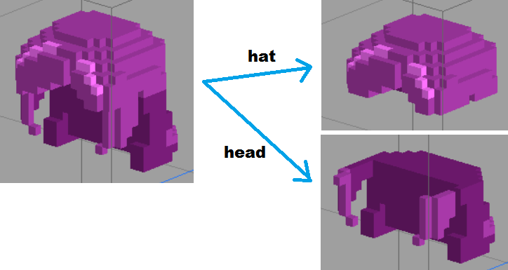
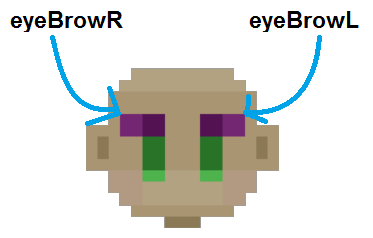
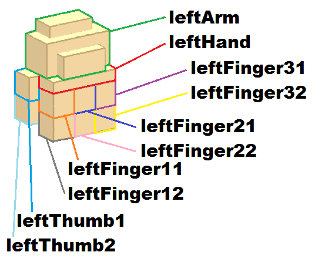
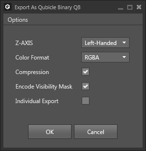
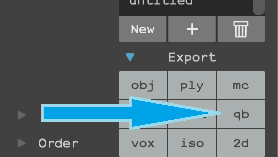
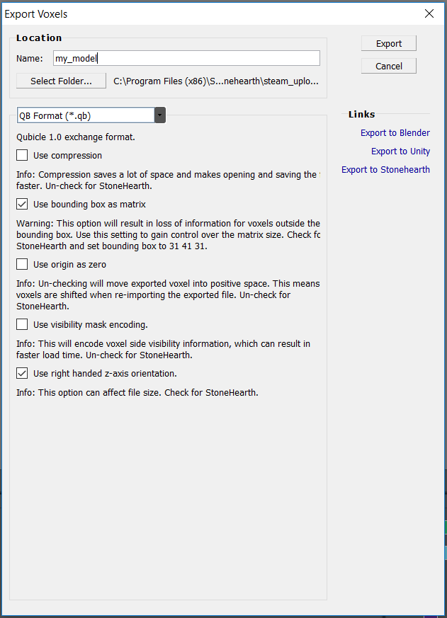

This guide will only explain how to import and export the models, and some other tips. For how to create and add items to the game, refer to this page.
There's an official modeling guide to help you achieve the Stonehearth look and feel for your models : Download
- Tools for voxel modeling
- The usual pipeline for modders
- About matrices / layers
- Alignment of the models
- Naming matrices / layers
- Modeling an item with Qubicle
- Modeling an item with Magicavoxel
- Modeling an item with Voxelshop
- Modeling an item with Goxel
Tools for voxel modeling
The team uses Qubicle Constructor 1.0 for creating the 3D models for the game. It is a paid program. The current version of Qubicle (at the time this guide was written) is Qubicle 3.0.
As for free tools, Magicavoxel, StoneVox, VoxelShop and Goxel should help you if you can't afford a paid program.
The usual pipeline for modders
Normally modders will find the asset they want in the game files, import it into their program of choice, edit it, and then export it again for using it on their mods. This is the easiest thing to do since it helps figuring out the scale and position. Comparing different items will also help.
The basic scale is:
- Terrain, trees, and building blocks have a scale of 1.
- The rest of the items you create with a 3D program will automatically get a scale of 0.1 (1/10 of a block).
You can easily see this by checking the hearthlings. A hearthling face is 13 voxels wide, and a hearthling in game occupies a little more than 1 terrain block. A wood log is 10x10x10 voxels inside Qubicle, and exactly 1 block inside the game.
You can make the model with less voxels and then enlarge or reduce it in the game with JSON. The amount of voxels will depend on the level of detail you want to achieve. Too many voxels/details are bad for performance, however.
Other tips for performant models are:
Filling the model completely on the inside with voxels (if the inside of the model can't be seen from the outside).
Reducing the size of the matrices/layers once the model is finished. This will save in mod size, unfortunately the game doesn't support compression of QB models so this is currently the only way to reduce model size.
About matrices / layers
With matrices we refer to different layers in the 3D model. This is terminology from Qubicle, for other programs you might see it as "layers".
If your model has different movable parts, each of them will have to be in a different matrix.
The matrix size doesn't matter in the end, but for easier modeling you can give it some room around your model so that you can add more voxels if you want to (you can't add voxels outside of a matrix/layer, it's like a bounding box). This might be different depending on the voxel editor of your choice, though.
When working on your model, it's better to make the size of each matrix exactly the same, so that the parts are correctly aligned to one another. Then, right before exporting your final model, you can optimize the size of each matrix so that the file is not so big.
Usually your model will be touching the bottom of the matrix, since that will align it with the floor in game, but there are some exceptions.
If your model is going to be a static object with only 1 part (for example, a chair) you can use Magicavoxel. However, Magicavoxel is not suited for models that are meant to be animated, like armor, living creatures, doors, or certain types of workbenches. Hopefully, in future versions of Magicavoxel we might get the option to export several layers on the same .qb file. You may use other of the free editors that support layers in the meantime, or use all the files as part of the model in the JSON file.
Alignment of the models
You might see that some objects (like weapons, or wall-mounted items) are aligned weirdly when you open their model in your voxel editor. This is because the attachment point corresponds to the center in the program (at 0,0,0). In Qubicle, most of the Stonehearth models are not centered but instead expand on one of the quadrants.
However there are some models that require you to center them around (0,0,0) in your program of choice. Bad aligned models will appear at wrong places after placing them into the game, so make sure to double check this.
This is one of the reasons why most modders import a similar object and edit over it, so that the centering is correct and they don't have to fiddle much with the values in the JSON file.
Since models can have an odd number of voxels, they might look off-centered by a little, but that's no problem because we will adjust their center on the JSON file. For adjusting the model origin in JSON, see this page.
Naming matrices / layers
This is very important for items like armor, or creatures that reuse existing rigs (for example, if you wanted to create your own population/faction by reskinning an existing one).
For other items the name is not that important, but for animated ones make sure that their matrices are all correctly named. If you edited an existing model, they will probably have the correct names already (unless you imported other objects in your file for reference, in that case they might have changed to something we don't want).
You can of course create your own creatures from scratch, but make sure you name your matrices accordingly, so that later the task of animating is easier.
For reference, when modeling armor or outfits, here's the exact names that you should use for the layers (notice that with "left" and "right" we refer to the sides of the hearthling, not ours):     It's not needed to have all the layers for the armor. If you copy an existing one, you'll see that many of them are missing. Here are the layer names for the left hand. For the right side (which is mirrored), replace all the "left"s with "right"s: 
Modeling an item with Qubicle
Disclaimer: the development team uses Qubicle 1.0 Master edition for making the models. Nowadays you would only be able to purchase the most recent version, Qubicle 3.0.
For renaming matrices in Qubicle, you can select the matrix and press F2:

Importing models into Qubicle
A quick way of importing existing .qb models into Qubicle is by dragging and dropping them into the main modeling area. You can import several models into the same scene, but depending on which version of Qubicle you're using, the names of the matrices might change to something we don't want.
Exporting with Qubicle
Settings needed for exporting the .qb models:
- Compression must be unchecked. The game can't read compressed QB models.
- Z-Axis must be Right-Handed. This will correctly align the model with the in-game axes.
- Individual export must be unchecked, otherwise each matrix will be exported into separate files.
If you happen to use an older version of Qubicle, the export settings are mostly the same. In Qubicle 1, the option color format should be "RGBA" and the "Single Object" option should be checked only if you want all your matrices to be merged into a single one. Uncheck it to keep your matrices separated within the same exported file (e.g. for animation): 
Modeling an item with Magicavoxel
Disclaimer: At the time this guide was written, the latest version of Magicavoxel was 0.99.1 (alpha). With this version, some old functionality is not available, but we can work with layers in the model, which wasn't previously available. Unfortunately, when exporting to .qb, every layer will be exported to a different .qb file, so you might want to create the item in the same layer then split it into different layers in Voxelshop, or in Goxel.
Importing models into Magicavoxel
This program can be a little finicky, so here's some instructions to import models into the latest version of MagicaVoxel:
- Drag and drop the .qb model into the palettes area. This will import the palette.
- Drag and drop the .qb model again into the model area. This will import the model and apply the correct palette that we just imported.
The layers won't be kept when importing either, they will get merged into a single object.
Exporting with Magicavoxel
With Magicavoxel 0.99.1, you can click on export (on the lower right) and select "qb".  This will export all the objects present in the world, each one in a different file. Currently there's no option to export all of the objects (layers) in a single file.
Modeling an item with Voxelshop
Many modders model in Magicavoxel, then export the model and import it into Voxelshop to split it into different layers (if the model needs to have several layers). For this to be efficient, note down the size of the layer when you're working in Magicavoxel, so that you know which size to use for the bounding box in Voxelshop.
Voxelshop will optimize the size of the layer when exporting, which we might not want when modeling items with several parts for Stonehearth, so we need to use correctly the bounding box that the program provides.
Importing models into Voxelshop
You can import models via the 'File->Import' option, but only one will be shown (unlike in Qubicle, where we can drag and drop many models and all will be shown in the same scene). Voxelshop will correctly display the colors and layers of the imported model, just like Qubicle. There might be an extra empty layer in the Layer list, but you can either delete it or when re-exporting the model Voxelshop will ignore it as long as it's empty.
When importing an existing model into Voxelshop, it might appear outside of the bounding box. That is because the bounding box center is at 0,0,0, while the model object corner is at 0,0,0 (because of how the model was exported with Qubicle).
So first of all, select all the model and move it inside the bounding box (or do it layer by layer), making sure it is centered on the 3 views. Then when exporting, make sure to use the bounding box as matrix. This will keep the size of the bounding box for all pieces, so they will be correctly aligned with each other.
Exporting with Voxelshop
When selecting to export to .qb format in Voxelshop, the description of the different export settings will tell you if the option needs to be checked or unchecked for Stonehearth. But just in case, here's a list of the options and the value they must have:
- Use compression : unchecked
- Use bounding box as matrix : checked
- Use origin as zero : unchecked
- Use visibility mask encoding : unchecked
- Use right handed z-axis orientation : checked 
Modeling an item with Goxel
To view the size of each layer in Goxel, select the layer, and click on "Bounded". You can then adjust the size and origin of the layer.
Importing models into Goxel
Go to 'File -> Import... -> qubicle' and select the QB file you wish to import.
Exporting with Goxel
Go to 'File -> Export As... -> qubicle'.
Like Magicavoxel, Goxel doesn't have export options for Qubicle files.